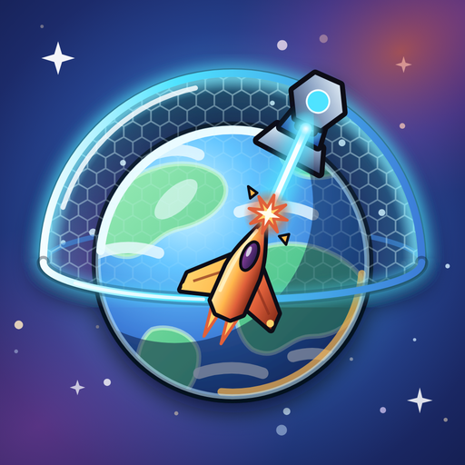

מגיני הכוכב
כוכב נגד כוכב: בונים תחנות כוח, מגדלי הגנה ונ"מ עם 10 נשקים, מייצרים 5 סוגי חיילים ו-5 סוגי חלליות, ושולחים אותם לכבוש את כוכב האויב. 100 שלבים ב-10 פרקים, יום ולילה, וכוכבים חיים עם חיות, דגים ונהרות.
⬇ הורד לאנדרואיד (APK) ▶ שחק עכשיו בדפדפןגרסה 0.3.0 · 15.11.2026
גרסה 0.3.0: הכוכבים חיים! יום ולילה: השמש מסתובבת, חוות השמש עובדות רק ביום, ובלילה המבנים מדליקים אורות ומאירים את האדמה סביבם. דגים שקופצים מהים, חיות שבורחות מקרבות, להקות ציפורים, צמחים מיוחדים לכל כוכב (קקטוסים, קרח, פטריות זוהרות, לבה) ונהרות מההרים לים. בחלל: ערפיליות בצבעי הפרק, שמש זוהרת וכוכבים רחוקים. מפת גלקסיה לבחירת שלב, עם חללית שטסה למשימה. ואפשר לבנות בכל מקום בכוכב שלך.
גרסה 0.3.0: הכוכבים חיים! יום ולילה: השמש מסתובבת, חוות השמש עובדות רק ביום, ובלילה המבנים מדליקים אורות ומאירים את האדמה סביבם. דגים שקופצים מהים, חיות שבורחות מקרבות, להקות ציפורים, צמחים מיוחדים לכל כוכב (קקטוסים, קרח, פטריות זוהרות, לבה) ונהרות מההרים לים. בחלל: ערפיליות בצבעי הפרק, שמש זוהרת וכוכבים רחוקים. מפת גלקסיה לבחירת שלב, עם חללית שטסה למשימה. ואפשר לבנות בכל מקום בכוכב שלך.
איך מתקינים: פותחים את הקובץ שהורד ומאשרים התקנה (פעם ראשונה צריך לאשר "התקנה ממקורות לא ידועים"). אחר כך המשחק מתעדכן לבד.
הקוד, הדגמים והצלילים מקוריים. המנוע התלת-ממדי: three.js (MIT).